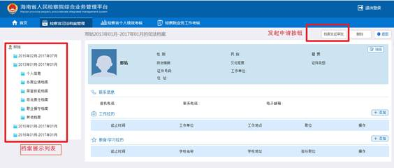
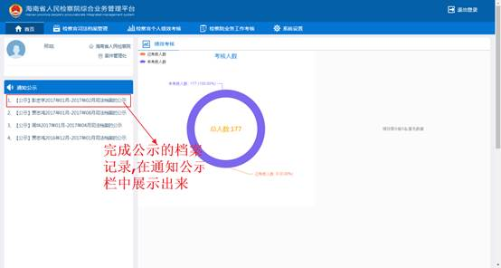

|
管理平台操作手册 （2017年7月） 海南省人民检察院 同方赛威讯信息技术有限公司 |
目录
1.系统概述
1.1系统简介
由于2014年中央全面深化改革领导小组第三次会议审议通过了《关于司法体制改革试点若干问题的框架意见》，《意见》中开始推行检察官司法责任制，目的在于改革传统办案模式，确立检察官的执法主体地位。为了加强检察官的日常管理提供基础性保障，检察院建立了检察官司法档案，对入额的检察官实行“一人一档”。 司法档案是对检察官办案业绩、司法技能、司法责任、职业操守等司法办案情况进行全面记载的书面资料，是对检察官办案绩效和职业素能进行综合评价的基础依据。
为适应检察改革需求，落实完善办案责任制的要求，提高办案效率和质量，提高检察官的业务素质和执法水平，昌平院结合主任检察官改革试点的工作实际及检察官责任制改革的需求，检察院开始实行检察官个人绩效考核制度。绩效考核内容综合考虑了办案数量、质量、效率、效果、安全、规范等因素，并包括了案件质量评查情况以及各部门业务中可以反映工作业绩的其他项目，各主任检察官的办案情况基本能够从考评内容中得以全面体现。由于各业务部门办理案件类型不同，工作方式不同，考核内容针对主任检察官采取了不同的考评标准。灵活多样的考评标准保证了绩效考评符合检察工作规律。考评结果以绩效评价为基础，与检察官奖惩挂钩。考核结果以通报形式发布，不计分值、不排名次，避免主任检察官片面追求考核分值，忽视办案质量；同时还规定，考核结果将作为主任检察官奖惩的依据之一，把考核与检察官的晋升、奖惩、淘汰直接挂钩，有助于促进检察官办案责任制的落实，充分调动检察官工作积极性。
1.2系统目标
本系统是解决检察官办案绩效和职业素进行综合评价，完善办案责任制的要求，提高办案效率和质量，提高检察官的业务素质和执法水平。通过本系统主要解决的问题是：
1.检察官司法档案
本系统实现对检察官办案业绩档案、荣誉技能档案、司法责任档案、职业操守档案以及其他档案进行全面记载、展示以及审批。
2.检察官个人绩效
实现对检察官的个人绩效考核，办案数量、办案质量、办案效果、综合业务、职业操守、外部评价的信息总览，对各指标类别下的指标项进行自评、部门评分、考评委员会评分以及对各项分数的备注，实现对所有分数的统计。并进行检察官个人绩效考核的审批。
3.检查院业务工作考核
实现检察院每年、每季度、每月对各个下级院进行业务考核的信息记载以及展示。
2登录及首页
2.1登录
点击电脑桌面客服端“综合业务管理平台”，在登录页面，选择单位名称、输入用户名和密码，点击“登录”按钮完成登录。用户名、密码与统一业务用户名、密码相同，见图1。
图1. 登录页面
2.2首页介绍
登录成功后，进入首页。在登录人信息展示栏，显示当前登录人的名字，所在单位及部门，在通知公示栏展示已经发起公示的档案。在环状图，饼状图，折线图区域展示个人绩效的统计信息。在司法档案展示栏展示当前登录人最新的司法档案的统计信息，见图2。
图2. 进入首页
2.3首页个人绩效信息展示
环状图、饼状图展示说明：
l 检察长、人事部人员、纪检人员、考评委员会人员都是展示本院所有部门。
l 副检察长展示本院所管部门。
l 处长、副处长、承办人都是展示本院本部门。
1.在环状图展示区域用环状图展示当前登录人对应展示范围已考核和未考核的人数，在饼状图展示区域用饼状图展示当前登录人对应范围绩效得分前五名的成绩及姓名
2.用折线图展示当前登录人本院各个业务类型绩效考核的最高分、最低分、平均分，见图3。
图3.
首页个人绩效信息展示
2.4首页新建司法档案
l 未创建司法档案
登录成功后，如果没有档案存在，在首页点击“添加档案”，见图4。
图4. 未创建档案页面
选择“档案开始时间”，“档案结束时间”点击“确定”按钮可完成新建司法档案，见图5。

图5. 新建弹出框页面
l 已创建过司法档案
登录成功后，在首页如果有司法档案存在，则显示最新的司法档案部分统计信息，见图6。点击“完整信息”按钮可跳转至司法档案详细信息页面，此页面的详细内容及结构说明可参考2.2节，图11。
图6. 已创建档案页面
3检察官司法档案管理
3.1档案查询功能
进入“检察官司法档案管理”页面显示的是当前单位登录人能看到的全部档案。选择检察院、起始年月和公示状态，输入档案人名称，点击查询，查询出这些条件下查出的档案，只能新建自己的档案。鼠标移到档案上面，显示档案的概要信息。双击则进入档案，见图7。
图7. 档案查询查询功能
查询权限：
l 检察长可以查询本院及下级院的所有档案；
l 纪检人员可以查询本院及下级院的所有档案；
l 副检察长可以查询本院所管部门、下级院对口所管部门的档案；
l 处长、副处长可以查询出查询本院本部门及下级院对口部门的所有档案；
l 案管人员可以查询自己及本院、下级院的所有档案；
l 人事部人员可以查询本院已公示的司法档案；
l 检察官可以查询出自己及本院已公示的司法档案；
查询界面，见图8。
图8. 查询功能
档案类型图例说明：
：未审批通过的司法档案
：已审批通过的司法档案
：已公示的司法档案
3.2新建司法档案
点击导航栏进入检察官司法档案查询页面,点击“新建我的司法档案”，见图9。
图9. 新增司法档案
在新建我的司法档案弹出窗口中，选择“档案开始时间”、“档案结束时间”点击“确定”按钮，完成新建，见图10。
图10.
选择起始日期
新建成功后跳转至司法档案详细信息页面。进入该页面后，显示的是档案的首页。左边的菜单，表示在这个时间段，不同类型的档案，点击后右边会展示相应的功能。见图11。

图11.
档案详细信息
3.2.1个人信息
点击个人信息，出现个人信息列表，然后点击“编辑”或者“添加”按钮，完善个人信息；当发现出档案新建错误时，可以点击第一个“删除”键，删除新建的档案；如果是“工作经历”和“教育学校经历”错误，可以点击“修改”或者第二个“删除”按钮进行更正和删除。
图12
3.2.2荣誉技能档案管理
点击菜单中的荣誉技能档案，右边的是荣誉技能的功能，此功能上部分显示的是荣誉技能、司法责任、职业操守和其他档案的个数，下部分显示的是荣誉技能档案的列表，可以根据具体情况进行查看、新增、删除、修改和发起审批。
首先新增点击“荣誉技能档案”在荣誉技能档案展示列表中点击“新增”按钮，见图13。
图13荣誉技能档案新增
在荣誉技能档案弹出框中填写信息后，点击“保存”按钮，见图14。
图14填写荣誉技能信息
新增荣誉技能档案成功后，在荣誉技能档案展示列表中点击此条记录的“修改”，当点击“删除”时，可以删除此条记录，见图15。

图15荣誉技能新增完成
填写信息，选择重新需要上传的文件，点击“修改”按钮，完成修改。点击“下载查看”，可以下载此前新增时上传的文件，见图16。
图16荣誉技能修改
3.2.3司法责任档案管理
l 只有纪检可以新增司法责任档案
点击“司法责任档案”在司法责任档案展示列表中点击“新增”按钮，见图17。

图17司法责任档案新增
在司法责任档案弹出框中填写信息后，点击“保存”按钮，见图18。
图18填写司法责任档案信息
新增司法责任档案成功后，在司法责任档案展示列表中点击此条记录的“修改”。当点击“删除”时，可以删除此条记录，见图19。
图19司法责任档案新增完成
填写信息，选择重新需要上传的文件，点击“修改”按钮，完成修改。点击“下载查看”，可以下载此前新增时上传的文件，见图20。
图20司法责任档案修改
3.2.4职业操守档案管理
l 只有纪检可以新增职业操守档案
点击“职业操守档案”在职业操守档案展示列表中点击“新增”按钮，见图21。
图21职业操守档案新增
在职业操守档案弹出框中填写信息后，点击“保存”按钮，见图22。

图22填写司法职业操守档案信息
新增职业操守档案成功后，在职业操守档案展示列表中点击此条记录的“修改”。当点击“删除”时，可以删除此条记录，见图23。
图23职业操守档案新增完成
填写信息，选择重新需要上传的文件，点击“修改”按钮，完成修改。点击“下载查看”，可以下载此前新增时上传的文件，见图24。
图24职业操守档案修改
3.2.5其他档案管理
点击“其他档案”在其他档案展示列表中点击“新增”按钮，见图25。
图25其他档案新增
在其他档案弹出框中填写信息后，点击“保存”按钮，见图26。
图26填写其他档案信息
新增其他档案成功后，在其他档案展示列表中点击此条记录的“修改”。当点击“删除”时，可以删除此条记录，见图27。
图27其他档案新增完成
填写信息，选择重新需要上传的文件，点击“修改”按钮，完成修改。点击“下载查看”，可以下载此前新增时上传的文件，见图28。
图28修改其他档案
3.3查看我的司法档案
点击“查看我的档案”跳转至司法档案详细信息页面，见图29。
图29查看司法档案
3.4司法档案审批
审批流程：发起人------>部门领导。
3.4.1司法档案发起审批
点击“档案发起审批”按钮选择审批人，点击“确定”按钮发起审批。选择的审批人只能是本院中当前登录人所属部门，见图30。
图30发起审批
选择审批人点击“确定”按钮发起审批，见图31。
图31选择审批人
3.4.2
撤回审批申请
在发起审批过后，若提交的申请，审批人还没有审批，可以进行撤回档案申请，点击“撤回档案审批申请”按钮完成撤回 ，见图32。
图32撤回审批
3.4.3司法档案审批
在待办业务处，点击进入司法档案审批页面进行审批，见图33。
图33进入司法档案审批页面
3.4.3.1审批同意
在司法档案审批页面填写审批意见，见图34。
图35同意审批
点击“同意”按钮同意此次审批，见图36。
图36审批通过
3.4.3.2审批驳回
在司法档案审批页面，填写审批意见，见图37。
图37填写驳回审批的意见
点击“驳回”按钮驳回此次审批，见图38。
图38审批未通过
3.4.4查看未审批通过的司法档案
在首页待办业务处可以看到未审批通过的司法档案，进入司法档案审批页面，见图39。
图39待办列表
进入司法档案审批页面，点击“设为已读”按钮，设为已读，见图40。
图40设为已读
设为已读成功，流程结束，见图41。
图41设为已读成功
3.4.5档案变更申请
审批流程：发起人------>部门领导------>案管。
当司法档案申请审核完毕后，如果发现有问题，可以点击“档案变更申请”，填写问题描述，选择申请人，发起申请。如图42
图42
图43
部门领导接受到信息后，对档案变更申请进行审核，审核完毕后自动发送给案管领导审批。
3.4.6
3.5荣誉技能档案审批
审批流程：检察官------->人事部------>案管处。
3.5.1荣誉技能档案发起审批
检察官填写好荣誉技能档案后，点击“发起审批”按钮，见图42。
图42荣誉技能档案发起审批
3.5.2荣誉技能档案撤回审批
荣誉技能档案发起审批成功后，点击“撤回申请”按钮完成撤回，见图43。
图43荣誉技能档案撤回审批
3.5.3人事部审批
人事部相关人员登录后，在待办业务处点击进入荣誉技能档案审批页面进行审批，见图44。
图44荣誉技能档案进入审批页面
3.5.3.1审批同意
在荣誉技能档案审批页面，填写审批意见，并同意，见图45。
图45荣誉技能档案审批同意
3.5.3.2审批退回
在荣誉技能档案审批页面，填写审批意见并退回，见图46。
图46荣誉技能档案审批回退
人事部退回过后，可以看到审批未通过的结果，见图47。
图47荣誉技能档案审批未通过
3.5.4案管处人员审批
人事部人员审批通过后，案件管理处相关人员登录进行审批。
3.5.6查看未审批通过的荣誉技能档案
在首页待办业务处可以看到未审批通过的荣誉技能档案，点击进入荣誉技能档案审批信息页面，见图48。
图48代办业务列表
从代办业务进入荣誉技能档案审批信息页面,查看审批的详细信息，见图49。
图49详情页面
3.6填写办案质量
办案质量用于填写办案效果、违法行使职权情况、办案安全、司法瑕疵、案件质量评查结果。填写权限：
l 检察长、案管人员可以填写本院及下级院的案件办案质量。
l 副检察长可以填写本院本部门，下级院对口部门及所管部门的案件办案质量。
l 处长、副处长可以填写本院本部门及下级院对口部门的案件办案质量。
在档案列表中双击档案，进入档案详细信息页面，见图50。
图50选择档案
点击“办案业绩档案”，在主办案件列表中点击“查看”，进入案件详细信息页面，见图51。
图51进入案件详细信息页面
填写办案质量信息,点击“保存”按钮，完成保存。填写成功后再次进入此页面时，可以看到已经填好的办案质量信息，见图52。
图52填写办案质量
3.7公示
公式流程：案管人员对档案公示之后，再发送给案管部门领导进行审核。
3.7.1发起公示
l 只有案管人员可以发起公示
进入检察官司法档案查询页面，单击审批通过的档案，进入到个人信息页面，点击“发起公示”按钮申请公示。只有审批通过的档案才能对其发起公示，见图53。
图53发起公示
图54
档案类型图例说明：
：未审批通过的司法档案
：已审批通过的司法档案
：已公示的司法档案
3.7.2通知公示栏展示
已完成公示的档案展示在通知公示栏。

图55公示成功
3.7.3取消公示
如果对公示错误的档案，案管人员可以直接点击“取消公示”，然后发送给案管领导进行审批，审批通过后公示被取消。
图56
3.7.3封存
因工作调动、退休、被免职等不再从事检察业务工作的，案件管理部门可以将其档案进行封存。点击“封存”，出现审批框，填写封存原因，夏煊泽审批人后，点击“确定”按钮。
图57
3.7.4档案核查
当检察官对公示的档案存在异议时，可以发起档案核查申请。点击“档案核查申请”，填写问题描述，选择审批人后点击“确定”按钮。（审批流程：检察官发起档案核查申请――部门领导审批――案管审批――案管领导审批）

图58
4检察官个人绩效考核
4.1检察官个人绩效查询功能
可以根据查询条件，查询出检察官个人绩效得分，并以环状图的形式展示出来，根据个人绩效分数分为优、良、中、差四个等级。
4.1.1检察官个人绩效查询
登录成功后，在导航栏点击“检察官个人绩效考核”进入检察官个人绩效查询功能页面，在页面查询条件区域输入和选择查询条件，点击“查询”按钮。在个人绩效得分环状图展示栏可以展示当前登录人对应查询范围的所有检察官的个人绩效。
查询说明：
l 检察长可以查询本院及下级院所有部门的个人绩效考核。
l 副检察长可以查询本院本部门，所管部门及下级院对口部门的个人绩效考核。
l 处长、副处长可以查询本院本部门及下级院对口部门的个人绩效考核。
l 人事部人员、纪检人员、考评委员会人员可以查询本院所有部门的个人绩效考核。
l 承办人可以查询本院本部门的个人绩效考核。
图59检察官个人绩效查询
检察官的个人绩效以环状图的形式显示。环状图展示出了此检察官的姓名、此个人绩效的年度、季度、业务类型。
图60环状图详细介绍
在查询条件中勾选了“对比模式”再点击“查询”按钮进行查询，查询后的结果，点击任意一个检察官个人绩效的指标类别，可以与其它检察官的个人绩效对应的此指标类别进行对比。
图61指标类别得分分值对比
4.1.2查询我的个人绩效
点击“查询我的个人绩效”按钮，进入个人绩效详细统计页面。可以查看个人绩效的详细统计信息。
图62查询我的个人绩效
4.1.3新增我的个人绩效
点击“新增我的个人绩效按钮”。
图63新增我的个人绩效
在弹出框中选择新增信息点击“确定”按钮，完成个人绩效新增。在弹出框中选择考核的年份、季度及业务类型。新增成功后跳转至个人绩效详细统计页面。业务类型下拉框中包当前登录人所办理的业务类型。
图64选择新增信息
4.2个人绩效考核
个人绩效考核流程：检察官自评------>部门领导考核----->交叉考核（只有分州市院、基层院有该环节）----->考评委员会考核。
4.2.1个人绩效详细介绍
在检察官个人绩效查询功能处，点击“查询我的个人绩效”跳转至此页面，在左上角区域选择年份和季度，此页面可以显示此检察官对应某年某季度的个人绩效详细信息。
图65个人绩效详细统计页面
在柱状图中点击得分对应的颜色，取消基础分得分的展示，则柱状图只显示评价分明细。
图66展示评价分得分明细
在柱状图中点击评价分对应的颜色，取消评价分的展示，则柱状图只显示基础得分明细。
图67展示评基础分得分明细
4.2.2检察官自评
在检察官自评列中，双击选中单元格，逐一输入每个指标项的自评分，每个指标项都可以上传证明材料及填写评分理由。
图68检察官自评
在弹出框中填写评分理由和上传证明材料后，点击“保存”按钮，系统将证明材料入库。
图69上传证明材料
自评完成后，点击“确认”按钮对自评得分完成保存。

图70保存自评得分
4.2.3检察官自评完成后发起审批
检察官自评分保存后，个人基础总分完成更新，点击“发起审批”按钮发起审批。
图71检察官发起审批
在弹出框中选择部门审批人。点击“确定”按钮发起审批。
图72选择审批人
发起审批成功后，提供了撤回审批功能。当审批人没有审批时，可以点击“撤回审批”按钮，完成撤回审批。撤回审批后可以再次重新发起审批。
图73撤回审批
4.3部门领导考核
4.3.1审批同意
检察官自评完发起审批后，部门领导登录系统后，在待办业务处可以看到需要审批的个人绩效信息，点击需要审批的个人绩效信息，进入审批页面。
图74进入审批页面
进入审批页面后，部门领导进行审批时可以在检察官自评列中看到检察官自评得每个指标项的自评分得分明细和自评得分总分。
图75查看检察官自评得分明细
点击“详细资料”，在弹出框中可以看到检察官自评时对应指标项的评分理由，点击“下载查看”可以下载查看此指标项对应的证明材料，见图70。
图76查看详细资料
查看完检察官自评时的自评得分明细和指标项对应的评分理由、证明材料后。部门领导在部门评分列中对每个指标项进行评分，见图71。
图77部门评分
在每一指标项对应的备注列中的“无”，在弹出框中填写此指标项的评分理由，并可以上传证明材料。
图78上传证明材料
部门领导评分、填写的评分理及上证明材料完成后，后点击“确认”按钮，保存评分结果。
图79保存部门评分
部门评分保存后，个人基础总分更新为部门评分总得分。填写完审批意见，并点击“同意”按钮后审批完成。
图80填写同意的审批意见
审批同意后，部门审批人的审批记录的审批意见更新为刚才填写的审批意见，审批结果更新为同意，追加一条审批记录，待下一个流程的审批人审批。
图81审批同意
4.3.2审批退回
填写审批意见，点击“退回”按钮完成审批退回。
图82填写退回的审批意见
退回成功后追加一条审批记录，记录检察官是否已读。
图83退回审批
检察官登录系统后，在待办列表点击未审批通过的待办事项进入个人绩效明细页面，见图78。
图84进入审批页面
点击“设为已读”按钮，完成设为已读。
图85设为已读
设为已读成功后，此条审批记录的审批结果更新为“已读”，审批流程结束。设为已读成功后，检察官可以再次进行自评并发起审批。
图86设为已读成功
4.3.3交叉考核
注：只有市院和基层院有交叉考核功能，省院没有交叉考核功能。
本院的部门领导审批同意后，根据配置的交叉考核信息，由核查检察院对被核查检察院进行考核。
4.3.4考评委员会考核
核查检察院对被核查检察院审批同意后，本院的考评委员会相关人员再进行考核。
4.3.5个人绩效考核完成
个人绩效考核完成后系统自动计算出每个指标类别的评价得分和评价总得分。
图87系统计算出评价得分
5检察院业务考核
5.1业务考核流程
省院案管对所有下级院发起年度业务考核，市院或者区院各部门部门领导指定考核人，考核人登录系统，对业务进行考核后发送给案管进行审批。（部门――案管（市院）；部门――案管――上级院案管（区县院））。
省院案管登录系统，点击“创建年度考核”，选择需要创建年度考核的年份后点击确定按钮。
下级院部门领导登录系统，点击检察院业务工作考核，选择年度和单位，点击查询；最后点击考核标题。
进入到指定考核人页面后，点击指定考核人，选择考核人名字，点击确定。
考核人登录系统，点击检察院业务考核，进入考核页面，对案件信息进行考核，填写完毕后，点击确定，发送审批。
部门领导接收审批消息后，对业务考核进行审批，点击统一审批完后，自动发送至案管进行审批。
案管登录系统，点击首页待办业务消息，进入到审核页面，填写审核意见，点击同意，如果对考核分数有异议的地方可以进行修改。
5.2考核内容填写
考核分数由部门领导制定考核人时进行填写，填写方式和个人绩效考核一致。
5.3考核总览
对所有考核项目进行统计，统一展示。
5.4异议申请
异议申请流程
当对业务考核有问题时，可以发起异议申请，点击业务考核总览，异议申请,选择审批人，输入异议申请理由。部门领导审批完毕后发送至省院案管进行审批。
省院案管在系统待办业务进行审批后，将消息返回给提出申请院，然后进行 业务考核修改。
修改完毕后再次发送审核，审核流程和创建流程一致。
5.5公布
由省院案管公布检察院业务考核信息。省院案管登录本系统，找到已经审批通过的检察院业务工作考核；点击标题进入检察院业务考核总览界面，点击公布按钮则可将该检察院的业务考核工作。
6系统设置
注：系统设置模块请使用统一业务系统管理员账号登录访问。
系统设置分为七个功能：
l 部门管理：管理员可以查看添加、修改和删除本院的部门。
l 角色管理：管理员可以查看和修改本院的角色信息。
l 人员管理：管理员可以查看添加、修改和删除本院的人员。
l 系统配置管理：管理员可以查看附件上传的路径，只有省院的管理员可以修改该路径。
l 绩效考核指标管理：省院的管理员可以添加、修改和删除考核指标信息，其他院的系统管理员可以查看当前院的绩效考核指标。
l 交叉考核配置管理：由省院的管理员进行配置管理，市院区院只能查看本院的配置。
l 日志管理：省院管理员可以查看所有日志并可以进行删除操作，市院、区院管理员可以查看本院和下级院的日志。
6.1部门管理
本系统的部门管理只能管理属于“纪检”、“人事部”、“考评委员会”的部门，其他部门使用统一业务的组织机构信息。
6.1.1添加部门
点击“添加部门”，进入添加页面，在输入框里输入新添部门的信息，然后点击“添加”按钮，完成部门添加。
图88添加部门
6.1.2部门列表
点击“部门管理”，进入部门管理页面，在部门管理部门列表中，每一行可以代表每个部门的概要信息，点击“修改”可进入修改界面，点击“删除”，可将该部门进行删除。
图89部门管理列表
6.1.3修改部门
在部门管理在某个部门下点击“修改”后，进入修改页面，在输入框里输入修改后的信息，然后点击“修改”按钮，完成部门修改。
图90修改部门
6.2角色管理
本系统的角色管理只能管理属于“纪检”、“人事部”、“考评委员会”的部门的角色，其角色属于系统内置角色，不能删除。
6.2.1查看角色
在左边的菜单栏中点击“角色管理”，右侧显示出角色列表，在角色列表中可以看到所有角色的具体信息。
图91查看角色
6.2.2修改角色名称
在角色列表中，点击任意一条记录的“修改”。
图92修改角色名称
在弹出框中输入新的角色名称，点击“确定”按钮，完成对此角色的角色名称的修改，角色名称修改成功后，角色列表中展示的信息会自动更新。
图93角色名称修改成功
6.3人员管理
6.3.1查看人员
在菜单栏中点击“人员管理”，可以看到右侧功能区域展示出树形菜单和人员展示列表。树形菜单展示的是当前登录人所在单位中所有的部门，一级节点为展示部门，二级节点展示此部门下对应的所有角色。在树形菜单中选择部门，再选择角色。可以看到右侧人员展示列表中展示的是当前登录人所在单位对应选中部门的选中角色的所有人员信息，统一业务的人员信息不会在本系统展示，显示人员只包括纪检、人事部、考评委员会的相关人员信息。
图94查看人员信息
6.3.2新增人员
在树形菜单树选择部门和选择对应的角色，点击“新增人员”可以新增人员。
图95选择部门和角色
人员展示列表区域切换至新增人员栏，输入和选择信息，输入和选择信息完成后点击“新增按钮”完成新增，新增成功后可以在人员列表中看到新增的人员。
图96新增人员
6.3.3修改人员信息
在人员展示列表中，点击任意一条记录的“修改”。
图97修改人员信息
人员展示列表区域切换至修改信息栏，输入和选择信息修改此人信息，输入和选择信息完成后点击“修改”按钮完成修改，完成修改后，可以在人员列表中看到此人员的信息已更新。
图98修改人员信息成功
6.4系统配置管理
6.4.1系统配置管理
目前系统配置管理包含上传文件的路径信息、个人绩效等级评定设置、档案核查期限设置，后续可能会添加其他配置信息。
（1）点击“系统配置管理”，输入修改后的文件路径，然后点击“确定”，文件路径便被修改了。
图99系统配置管理
（2）个人绩效等级评定设置：在个人绩效考核时会出现优、良、中、差显示，可以在个人绩效等级评定设置分数区间对应的等级，设置完毕后点击“确定”按钮。
图100
（3）档案查询期限设置：档案变更申请和核查有时间限制，在规定时间内才能进行变更申请、核查，如果需要延长或者缩短变更申请、核查时间，可以在档案核查期限进行设置，设置完毕后点击“确定”按钮。
图101
6.5绩效考核指标管理
点击“绩效考核指标管理”进入绩效考核指标管理页面，见图94。

图102绩效考核管理页面
省院管理员可点击“省院”、“市院”、“区院”切换下方展示的绩效考核列表，只有省院管理员可以添加、修改和删除绩效考核指标。市院、区院管理员只能查看当前院相关绩效指标配置，不能做添加、修改和删除操作，见图95。
图103切换视图
6.5.1新增绩效考核配置
省院管理员可以点击“新增”可以新增绩效考核配置，也可以对绩效考核进行“修改”和“删除”，点击“删除”可以删除该列的绩效考核，点击“修改”可以进入绩效考核的编辑页面。
图104新增绩效考核
选择绩效考核配置的“单位级别”、“业务类别”确定新增的绩效考核的类型，点击确认可以进入编辑页面。
图105新增绩效考核配置
6.5.2绩效考核指标编辑页面
绩效考核编辑页面可以点击“预览”进入预览的模式，见图18，也可以点击“编辑”或“预览”进入不同的的显示模式。
图106预览模式
图107编辑模式
如果需要新增一行，可以选中一行后，点击“插入加行”在选中的行下方新增一行空白行。
图108新增行
双击行可以编辑该行，输入指标信息。在“是否系统评分”列配置当前指标是否是由系统自动计算，选择“自动计算”后需要上传自动计算的插件。
图109编辑行
在点击“上传附件”后，会弹出上传附件的窗口。先点击“选择文件”选取自动计算插件，再点击“提交”来上传该插件文件。
图110上传附件
页面处于编辑模式的时候，可以选中一行，点击“删除行”删除当前选中的行。
图111删除绩效考核配置
在编辑完成后，可以点击“确认”保存本次编辑的内容，如果想要取消本次编辑的内容，可以点击“取消”。
图112保存或取消编辑
6.6交叉核查配置
点击“交叉核查配置”进入交叉核查配置的页面，可以看到已配置的交叉核查的信息，省院管理员可以查看所有交叉核查配置并且可以进行添加、修改和删除，市院和区院只能查看本院的核查配置，不能做添加、修改、删除操作。
图113交叉核查配置省院
图114交叉核查配置市院、区院
6.6.1按条件查看
省院可以点击下拉列表，选择一个单位作为被核查单位为条件，搜索交叉核查配置，在列表中展示搜索结果，市院、区院不能进行选择，默认只能查看本院核查及被核查的数据。
图115搜索交叉核查配置
6.6.2重新加载
“重新加载”按钮可以清除选择的查询条件，重新加载交叉核查配置，省院显示所有交叉核查配置，市院、区院只刷新显示本院核查及被核查的数据。
图116重新加载
6.6.3添加核查配置
点击“添加”可以新增交叉核查配置。
图117添加交叉核查配置
在点击“添加”后，会弹出窗口输入交叉核查配置的内容，季度是每年的二月到四月为第一季度，五月到七月为第二季度，八月到十月为第三季度，十一月到第二年的一月为第四季度，输入内容后，点击“确认”保存配置，也可以点击“取消”取消本次操作。
图118添加交叉核查配置
6.6.4修改交叉核查配置
在选中需要修改的一行过后，点击“修改”可以修改选中的配置。
图119修改交叉核查配置
点击“修改”后，在弹出框内输入内容，点击“确认”可以保存本次修改，点击“取消”可以取消本次修改。
图120修改交叉核查配置
6.6.5删除交叉核查配置
省院进行删除操作，需要删除交叉核查配置时，可以选择一个或多个行点击“删除”进行删除。
图121删除交叉核查配置
6.7日志管理
日志管理分为操作日志和错误日志，日志的信息包括检察院、操作人、日志内容。
6.7.1查看日志
日志管理中可以查看本院或下级院的进行操作保存的日志，省院可以查看有的日志。
图122日志管理
6.7.2删除日志
省院可对日志进行删除操作,可以进行选择删除和批量删除。
图123删除日志
7.角色划分
检察官
纪检
人事员
考评委员会
案管